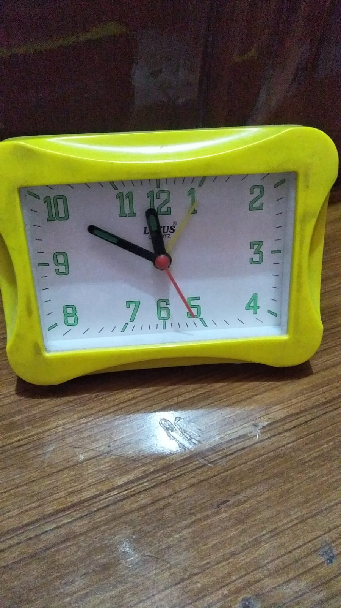

CASE STUDY

- Test Image 1 -
Output On Google lense - Rubber Band
Output On Mobilenet Project - circle
Result -
Google lense is more Accurate.
- Test Image 2 -
Output On Google lense - Water Bottel
Output On Mobilenet Project - Bottle
Result -
Both are equaly Accurate.
- Test Image 3 - 
- Test Image 4 -
-
Test Image 5 -